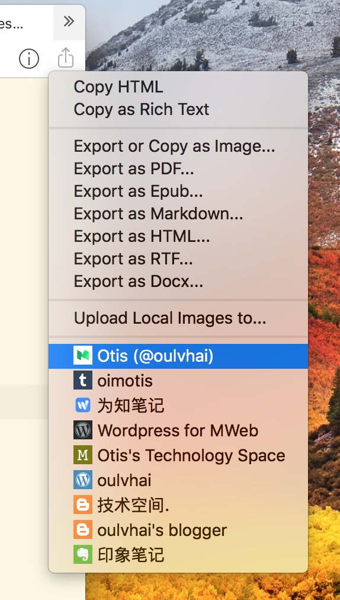
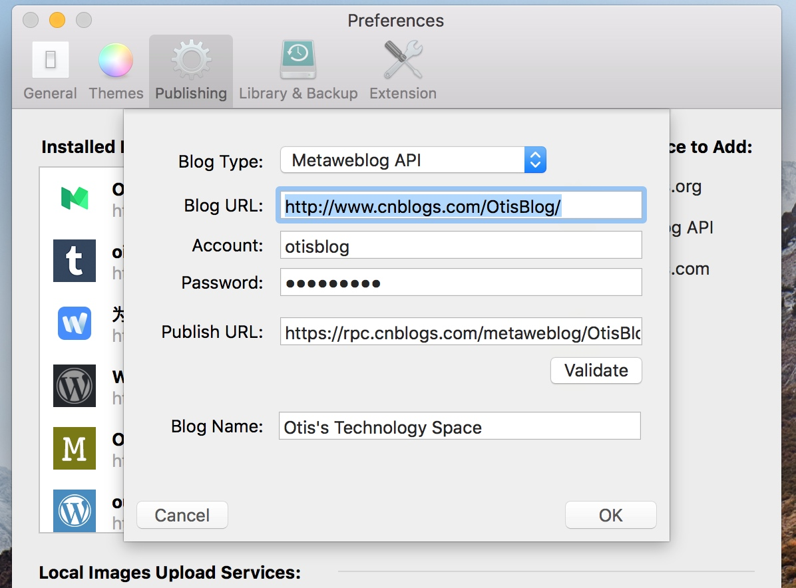

Use MWeb to publish documents to Wordrpess, services that support the Metaweblog API protocol, Wordpress.com, Evernote, Blogger, Medium, Tumblr.
Adding and using the Publishing Services
To use the Publishing Services, you must add the Publishing Services. Please add the Publishing Services in Preferences - Publishing, as shown below:

If you are a 2.x version user of MWeb, you can update 2.x to the latest version, then export the Publishing Services from 2.x and import it in version 3.x. It should be noted that the Evernote Publishing Service cannot be imported and must be re-added.
After the publishing service is added, you can drag and drop to change the order of Publishing Services. Then all the added publishing services will be displayed in the Publish menu, and will also be displayed in the Share button on the toolbar, as shown below:

In the current document, select the publishing service to publish to, and you can call up the relevant interface to publish.
In addition to being published for the purpose of knowing notes, almost all publishing services support the release of local images. In addition to Medium, other services support updating, that is, the same publishing service, after you publish it once, when it is released, it will appear. Update the information of the document and a check box. If you check it, the published document will be updated. The default is checked. If you uncheck it, a new article will be published, as shown below:
Metaweblog API Introduction
In the Add Publishing Service, select the Metaweblog API and the following interface will appear. In the pop-in project posted to the Metaweblog API, an item called "API Address" is added. Each website that supports the Metaweblog API provides an API address and fills in.

The Metaweblog API addresses:
- typecho blog: http://xx.com/action/xmlrpc, where xx.com is your blog URL. If typecho has not yet done url rewrite, it is http://xx.com/index.php/action/xmlrpc
Sending images to Tumblr
Publishing to Tumblr generally does not support uploading local images, but if you have configured the Images Upload Service, you can use the Images Upload Service to publish to Tumblr to support local images, as shown below, select a Images Upload Service when publishing.